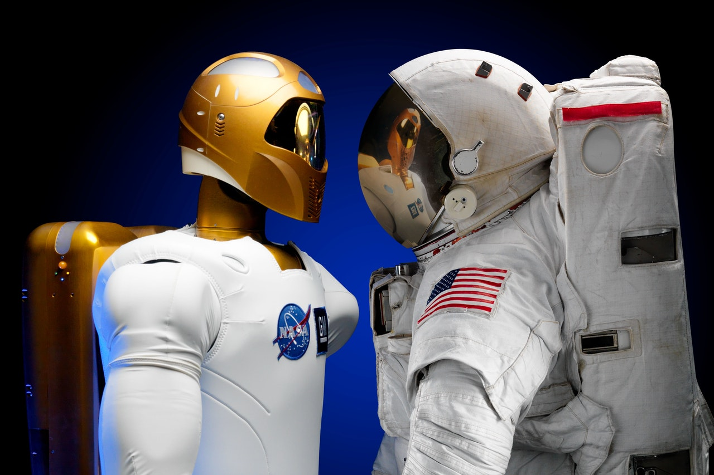
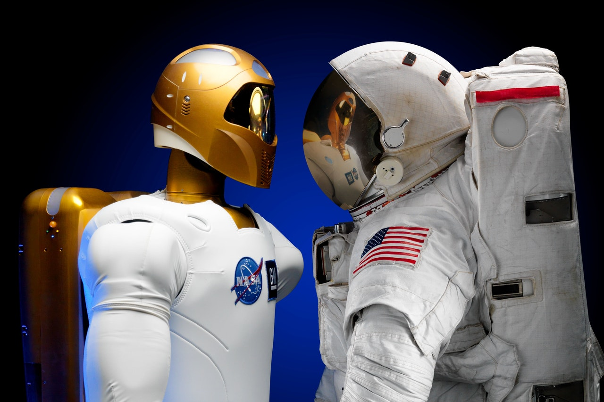

O termo "inteligência artificial" representa um conjunto de software, lógica,
computação e disciplinas filosóficas que visa fazer com que os computadores realizem funções que se
pensava ser exclusivamente humanas, como perceber o significado em linguagem escrita ou falada,
aprender, reconhecer expressões faciais e assim por diante. O campo de IA tem um longo histórico, com
muitos avanços anteriores, como reconhecimento de caracteres ópticos, que agora são considerados rotina.
Link
Qual é o principal objetivo da Inteligência Artificial?
O principal objetivo da Inteligência Artificial é a criação de máquinas que possam emular o
comportamento humano e raciocinar de maneira lógica para auxiliar em diferentes aspectos da vida humana.
Isso pode acontecer na realização de tarefas cotidianas, no avanço de pesquisas científicas ou na
modernização de indústrias, especialmente em tempos de Indústria 4.0.
Link
Como a IA está afetando o mercado de trabalho?
Um estudo da revista americana Newsweek constatou nos Estados Unidos que na década de 70, 14% dos homens
e 8% da mulheres tinham curso superior. Já no ano de 2015, 32% dos homens e mulheres tinham um diploma
de curso superior.
Consequentemente, com o passar do tempo, aqueles indivíduos que estavam satisfeitos em assumirem cargos
menos favorecidos foram estimulados a se aperfeiçoarem através de formações de nível superior, preparo
intelectual e experiência, a fim de garantirem seus espaços no mercado de trabalho, desenvolvendo a
sociedade como um todo.
Link


 
